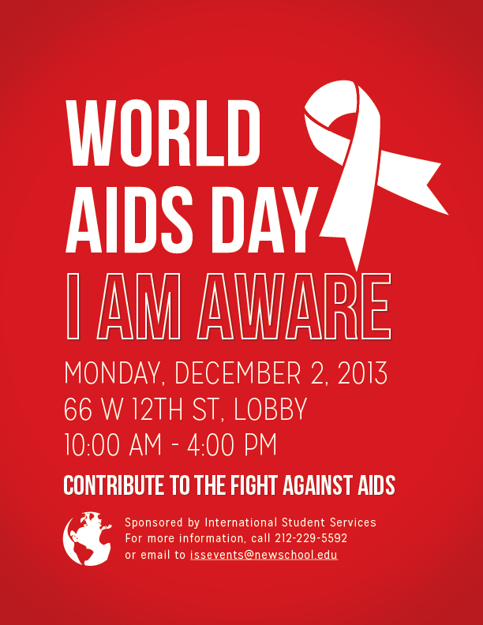
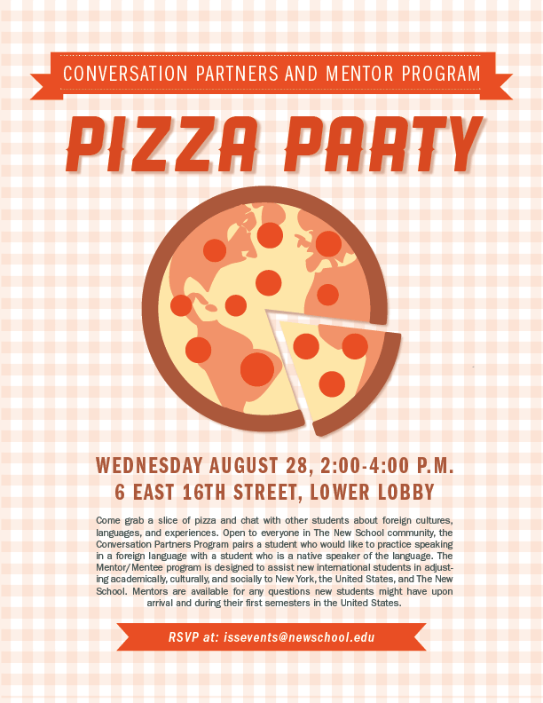
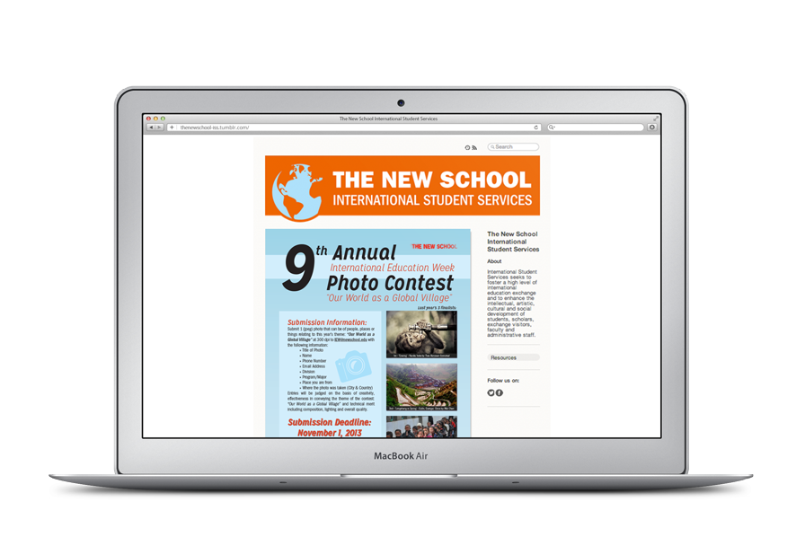
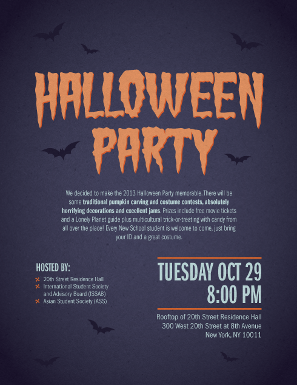
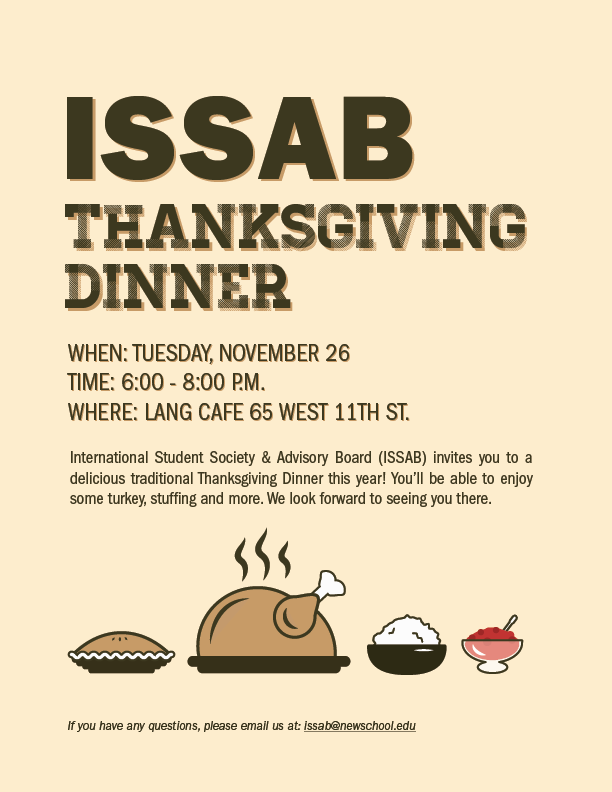

The Problem
When I got to ISS, I had the task of designing and developing posters, newsletters, and social media graphics for the office. Although we were part of The New School, we didn't set ourselves apart. So I started out with creating a logo for our office, so students could recognize us around campus.


The logo was then used through all our communication materials and students were better able to recognize our office.





In addition to ISS, I designed posters for the International Student Society and Advisory Board.


ISS News
At ISS I also had the task to improve our newsletter. I started out by benchmarking other newsletters for international students to look at the content they were providing. I then did research on our students through informal interviews and surveys to find out about their interests and ways we could help them. The main areas of interest were employment opportunities for international students and things to do in New York City.
The next part was designing the newsletter, for which I developed several wireframes. I then tested the designs with students and international student advisors. We ultimately decided on the design below.

Results
After I made these changes, our average readership grew from around 20% to around 60%.